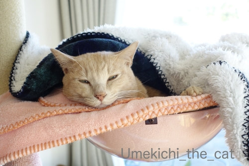
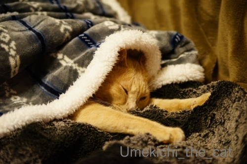
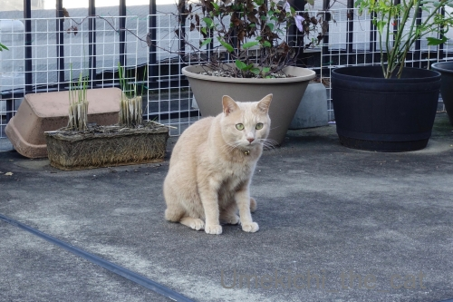
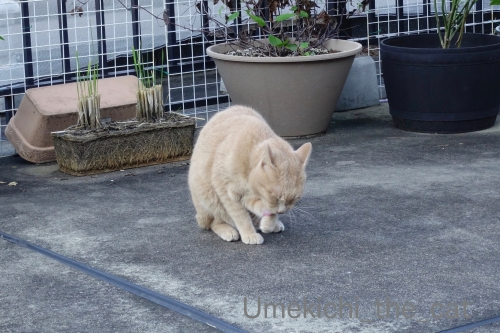
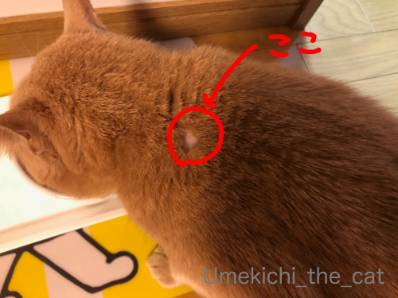
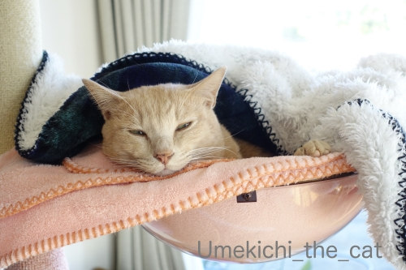
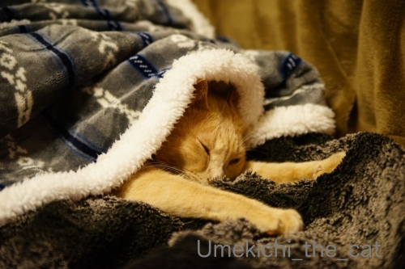
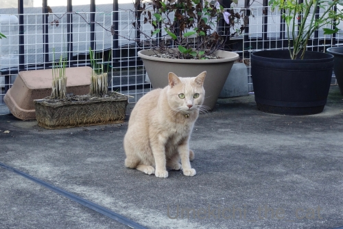
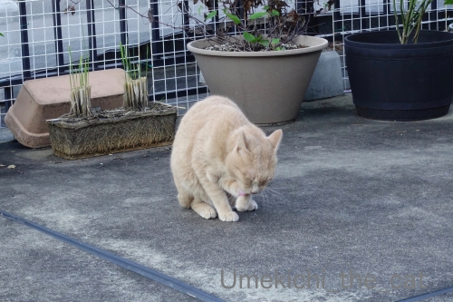
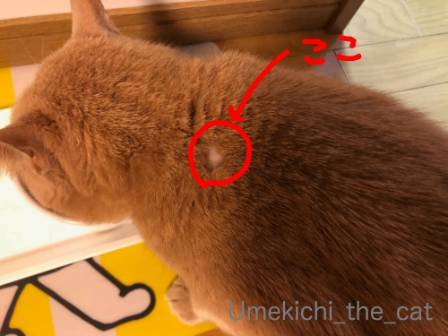

首元だけうっすら寒い！？ぬくぬく生活 [梅吉]
とある日も

また、とある日も

ぬくぬくしている梅吉さんですが

日差しのある日はベランダも楽しんでます。
コンクリートは冷たくなってきたのでくりんくるんは見られなくなりましたけど。
後ろに見えている四角い土と根のかたまりは稲穂を刈り取った後です。
稲穂？って？？
我が家は毎年プランターでお米作ってますw
今年の苗は住吉大社の御田植神事の後、使わずにあぜに残されてた苗を分けていただきました＾＾
二束ほど収穫した稲穂はただ今「はざ掛け」中。（吊るしてあるだけですけど）
脱穀して食べるくらいの量は収穫できませんが
お料理の飾りにしたり御正月飾りの一部にと使う予定です＾＾
で、土の塊は捨てやすい様に干しているところ。

我が家地方の冬の特徴、西からの冷たい風が吹き抜ける様になったので
梅吉さんのベランダ滞在時間は短いです。
手短にパトロールをしてささっと毛づくろいをしたらとっとと家に入って行きました(⌒-⌒;
その梅吉さんですが・・・・10月31日のこと。

首〜肩のところがハゲになってしまいました(꒦ິ⌑꒦ີ)
梅吉は植物の多いベランダで遊ぶのが大好きなので
ノミダニ予防として毎月自分でレボリューションをしています。
レボリューション：簡単にいうと回虫駆除、ノミ・ダニの駆除、寄生予防剤で
舐められない位置、首〜方の辺りに数的垂らして使います。
お薬をさして数時間後に梅吉が首の後ろを掻いていたら大量の抜け毛がどばどばどばーっと！！
慌てて確かめるとレボリューションを垂らした付近の毛が抜けて皮膚が少しだけ赤くなっていました。
こうなったのは初めて。
レボリューションの注意書きを読んだりネットで調べるとよくある副作用とのこと。
脱毛とあわせて食欲不振、元気がなくなるなどの症状も現れるとのことでしたが
幸いにして元気で食欲も旺盛。
数日様子を見ていましたが脱毛が広がる様子もなく皮膚の赤みもすぐに引いたので
無理に病院に連れていくよりはと家で様子見することにしました。
体質の変化？その時の体調にもよるのでしょうか。
今まで大丈夫だったものが突然体に合わなくなること、人間でもありますものね。
皆様のおうちのにゃんこさん達は梅吉の様にベランダに出ることもなく
ダニ駆除剤の様なものはお使いではないと思いますが
もしお使いの方がいらっしゃったらお薬使用後は気をつけて様子を見てあげてくださいね。
突然こんなことが起きるかも。
12月初めに定期通院の予約が入っているので今回のことはその時に獣医さんに相談してみます。
ハゲになっちゃったところ、今はうっすら毛が生え始めていますよー。
 ↑ガブッと一押し↑
↑ガブッと一押し↑
先日おっとが札幌出張の際に買ってきたもの。

この３種、道産子以外で全部答えられる方がいたら凄い！北海道ツウ！！
色々説明を書こうかと思ったのですが長くなりそうなので詳細は次回記事にて＾＾
引っ張りますよw
偶然にも日曜日にアップされたmarimoさんの記事が似たお話！！
でもねー、白いご飯ではしないですから (＠◇＠)

また、とある日も

ぬくぬくしている梅吉さんですが

日差しのある日はベランダも楽しんでます。
コンクリートは冷たくなってきたのでくりんくるんは見られなくなりましたけど。
後ろに見えている四角い土と根のかたまりは稲穂を刈り取った後です。
稲穂？って？？
我が家は毎年プランターでお米作ってますw
今年の苗は住吉大社の御田植神事の後、使わずにあぜに残されてた苗を分けていただきました＾＾
二束ほど収穫した稲穂はただ今「はざ掛け」中。（吊るしてあるだけですけど）
脱穀して食べるくらいの量は収穫できませんが
お料理の飾りにしたり御正月飾りの一部にと使う予定です＾＾
で、土の塊は捨てやすい様に干しているところ。

我が家地方の冬の特徴、西からの冷たい風が吹き抜ける様になったので
梅吉さんのベランダ滞在時間は短いです。
手短にパトロールをしてささっと毛づくろいをしたらとっとと家に入って行きました(⌒-⌒;
その梅吉さんですが・・・・10月31日のこと。

首〜肩のところがハゲになってしまいました(꒦ິ⌑꒦ີ)
梅吉は植物の多いベランダで遊ぶのが大好きなので
ノミダニ予防として毎月自分でレボリューションをしています。
レボリューション：簡単にいうと回虫駆除、ノミ・ダニの駆除、寄生予防剤で
舐められない位置、首〜方の辺りに数的垂らして使います。
お薬をさして数時間後に梅吉が首の後ろを掻いていたら大量の抜け毛がどばどばどばーっと！！
慌てて確かめるとレボリューションを垂らした付近の毛が抜けて皮膚が少しだけ赤くなっていました。
こうなったのは初めて。
レボリューションの注意書きを読んだりネットで調べるとよくある副作用とのこと。
脱毛とあわせて食欲不振、元気がなくなるなどの症状も現れるとのことでしたが
幸いにして元気で食欲も旺盛。
数日様子を見ていましたが脱毛が広がる様子もなく皮膚の赤みもすぐに引いたので
無理に病院に連れていくよりはと家で様子見することにしました。
体質の変化？その時の体調にもよるのでしょうか。
今まで大丈夫だったものが突然体に合わなくなること、人間でもありますものね。
皆様のおうちのにゃんこさん達は梅吉の様にベランダに出ることもなく
ダニ駆除剤の様なものはお使いではないと思いますが
もしお使いの方がいらっしゃったらお薬使用後は気をつけて様子を見てあげてくださいね。
突然こんなことが起きるかも。
12月初めに定期通院の予約が入っているので今回のことはその時に獣医さんに相談してみます。
ハゲになっちゃったところ、今はうっすら毛が生え始めていますよー。
先日おっとが札幌出張の際に買ってきたもの。
この３種、道産子以外で全部答えられる方がいたら凄い！北海道ツウ！！
色々説明を書こうかと思ったのですが長くなりそうなので詳細は次回記事にて＾＾
引っ張りますよw
偶然にも日曜日にアップされたmarimoさんの記事が似たお話！！
でもねー、白いご飯ではしないですから (＠◇＠)

カフェオレ色の梅吉

梅吉 2023年8月10日 永眠


梅吉と出会った譲渡会

犬猫の理由なき殺処分ゼロ
妄想広告
UMEKICHI 光

爆発的に早い！
時々攻撃的！
Thanks to Mr.Boss365
爆発的に早い！
時々攻撃的！
Thanks to Mr.Boss365

そうですよね、いつもの薬なのにおかしい事
人間でもありますよね
大事なくてよかったです
剥げた部分、毛が生えてきて良かった！
by 藤並 香衣 (2019-11-18 00:26)
ベランダにはまだスペースがありそうなので、
次回は大量の米を生産して出荷してみては(笑)
梅吉さんはまた毛が生えてきて良かった♪
最後の北海道メニューは生粋の奈良っ子なので一つも分かりません～
by yamatonosuke (2019-11-18 00:57)
ハゲることががあるなんて知りませんでした。すぐに生えてきて良かった~。
甘納豆赤飯は食べてみたいです。
by zombiekong (2019-11-18 02:35)
皮膚の赤みが取れてほっと一安心ですね^^
by ニコニコファイト (2019-11-18 06:46)
確かに予防したほうが良いのでしょうが
脱走しても蚤を拾って来た事が無いので何もしてません。
外猫の2匹にも蚤は付いてないみたいだし＾＾；
by ぽちの輔 (2019-11-18 06:56)
確かにその時の体調でいつもの薬が効きすぎたり
副作用起こしたりありますよねぇ(*_*)
ニャンコのカキカキって結構な力が入ってると
うちの大御所が梅吉さんと同じ場所にハゲを作った（アレルギーが原因）時に
獣医さんに聞いたことがあります(⌒-⌒; )
梅吉さん、病院に行かずに治って良かったです( ^ω^ )
by ニッキー (2019-11-18 06:59)
ベランダで米作りしてるんだ（ﾟ□ﾟ）
ハゲと言えば、ハゲと言う駅名もあるよw
by 英ちゃん (2019-11-18 07:41)
梅吉さん、治りつつ有り良かったですね(^^)
今朝、玄関を開けると道路でしょうちゃんと子猫がゴロンとしてました。
寒いとは言え、半外猫さんたちにはまだまだ耐えうる天気みたいですね。
by kou (2019-11-18 07:52)
大嘗祭を思い出しました。
こんにゃくたらこ和え？甘いおマメのお赤飯？
お魚はなんだろう～？？
道産子の嫁ですが、分かりませしぇん…
by liang (2019-11-18 08:09)
以前、数か月だけ住んだマンションの管理人さん宅が
ゴミ屋敷状態だったので、ノミが私の部屋にまで侵入してきて
タルちゃんが条虫症にかかりフロントラインで駆除しました。
抜け毛などはなく、１週間くらいで治りましたが。
ベランダによく出ていた頃にNaoちゃんにフロントラインを
首の後ろにしたとき毛繕いでちょっぴり液体が口に入ったのか？
泡を吹いたことがあり、びっくりしてウェットティシュですぐ拭き取りました。お薬ってやはり怖いなぁと思った瞬間でした。
梅吉さん大事に至らなくてよかったですねｗ
人間もその日の体調でいつもならOKなものがNGだったりするのでね(^^
赤飯(;^_^A 記事ご紹介いただきありがとうございます。
写真・・・赤飯しかわかりません。
by marimo (2019-11-18 09:33)
薬の副作用で抜け毛になっちゃうのですね！
梅吉さんは食欲とかは落ちなくて一安心ですね。
by ma2ma2 (2019-11-18 10:04)
ぬくぬく梅吉さん♪
幸せそうです(#^.^#)
いつもの薬でもおかしくなる・・
その時の体調にもよりますし、
今は治りかけているみたいで良かったです♪
by きぃ (2019-11-18 10:29)
ここ数年、どんどん頭髪が減少中の私には
脱毛という単語に反応してしまいました(^_^;)
うっすら生えてきてるとは、素晴らしい！！
by よーちゃん (2019-11-18 10:32)
こんにちは。出遅れました・・・
梅吉さん、ぬくぬくで満足顔な寝顔！！薄目がいい感じです。
バルコニーで稲作！！将来、自給自足も可能です（笑）備われば憂いなしかな？
「お料理の飾り・御正月飾り」は趣があり良い使い方ですね。
御正月飾りは、梅吉さんの遊び道具なりそう？
毛繕い風景もいい感じ、寒さには敏感ですね。
ところで、バルコニー床の防水加工？大丈夫ですか？多少気になりました。
脱毛？薬の刺激が強かった可能性ありますね。
小生猫も季節の変わり目に、スパッと部分的に剥げることありますが、すぐ回復。
梅吉さんも大丈夫と思います。レボリューションの薬をしなくても・・・
梅吉さん！！キレイ綺麗なので大丈夫と推測です。
早期の回復を願ってます！？(=^･ｪ･^=)
by Boss365 (2019-11-18 12:14)
え～っ？ レボリューションでハゲが？？？
ノミ、ダニだけでなくフィラリアにも効果があるということで、こてつにほぼ毎月使っていますが、これまで体調崩したことはありません。
どんな薬にも副作用は必ずあって悩ましいのですが、蚊が媒介するフィラリアが心配で・・・。
ウチの場合は爪切りに定期的に病院へいかねばならない事情もあり、病院でもらっちゃう可能性も考えて使ってます^^
体調による、それはあると思います。
あ～っ甘納豆のお赤飯！(#^^#) まだ食べたことありません！！
by ゆきち (2019-11-18 12:20)
あららら。梅吉くん、これはビックリ。
突然合わなくなるってことありますよね。
でもうっすら毛が生えてきてるなら良かったよぉ
レボリューション、毎年、やろうと思うんだけど、未だ経験はないのです。
もし使うときは気をつけてみるわ。
ダンナさまの札幌出張！
これまた懐かしいものをｗｗ
こっちでは食べないよねー。
もちろん名前は書かないでおくよ。でもわたし、左上のもの、大好きｗｗ
ああああ。食べたいなあ〜〜〜
下の魚も、お酒のつまみだね^m^)b
by リュカ (2019-11-18 20:04)
我が家の猫さんは、家の中だけで生活しています。
二階のベランダに洗濯物を干すときは、必ずついて行ってベランダで遊びます。奥さんの後をついて回ります。
そのような薬は使ったことが無いと思います。多分。
副作用があるんですね。知りませんでした＾＾
by riverwalk (2019-11-18 21:26)
ノミダニの滴下薬で大量脱毛はうちも一度ありました。
いつも平気なのに、他の子は平気だったのに、一匹だけ
痒い痒いで大変で慌ててシャンプーしたことが。
もっと昔にノミ取り首輪を使っていた時代は先代の柴犬
がグッタリしてしまい大慌てで病院に駆け込んだり。やはり
虫を殺す薬だから犬や猫にも負担はかかるんですね。
by mio (2019-11-18 21:49)
梅吉さん、スーパーマンになった夢でしょうか（笑）
お正月の飾りに自分で作った稲穂で
設えられるって、素敵ですね。
私は松と（頂いた）稲穂で、お正月のドア飾り作ってます。
私が接触皮膚炎になった時が、同じような感じでした。
いつもの化粧品、ある日ザラザラして、一切の化粧品を受け付けなくなりました。
あ〜る日突然です（笑）
梅吉さん、早く治ると良いですね。
by kiki (2019-11-18 21:58)
寒くなってきたので、お外で遊ぶのも少なくなってくることでしょうね。
薬の副作用で脱毛しちゃうなんて知りませんでした。
でも毛が生えてきたとのことで何よりです。
北海道名物（？）三種、ぜんぜん分かりません。。。
赤飯のおにぎりでなにか固有の名称があるのかなぁ、むむむ。 ^^;
by yes_hama (2019-11-18 22:23)
梅吉さん、お大事にです。
ごめんなさい。今日は気力ないので、お見舞いコメントだけでーー。
by ChatBleu (2019-11-18 22:52)
うちでは掻きむしってしまってダニかな？
と言う事で、塗り薬とレボリューション付けました。
その後は毛は生え揃って来ました。
まだたまに首元痒がるので心配です。
ちなみにレボリューション滴下の脱毛は無いです。
by sally (2019-11-19 16:10)
フロントライン、我が家でも時々やります。
でもこれがなぜか大っ嫌いなので、タイミングを
見計らうのが大変で＾＾
こういうものの副作用があるのですね(￣Д￣；；
おパゲが早く治ってよかったです。
北海道の食材...ムズいですね(･∀･；)
まだまだだなぁ、私(笑)
by カトリーヌ (2019-11-21 11:40)